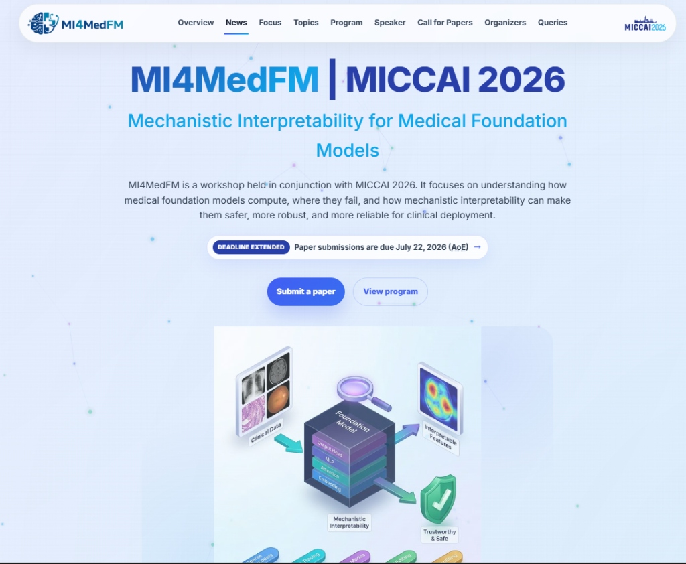
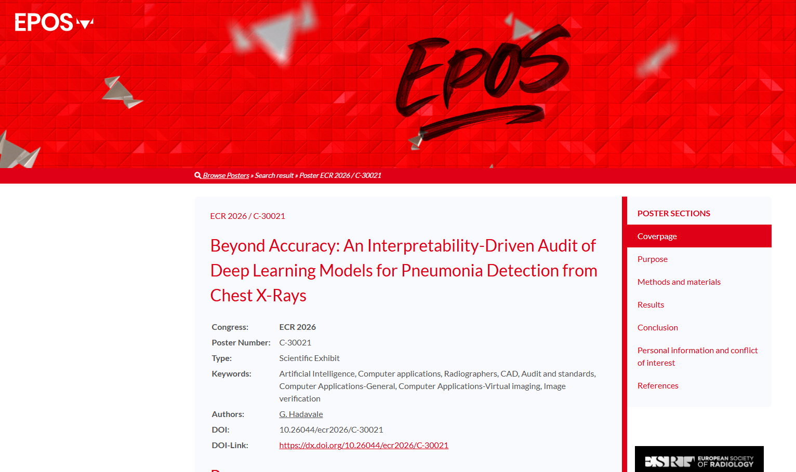
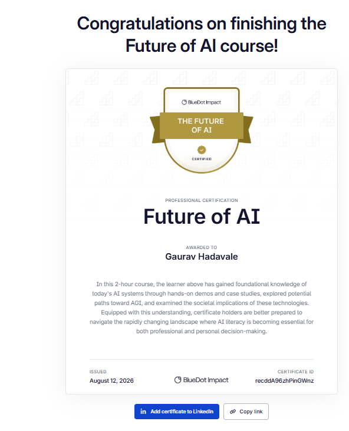
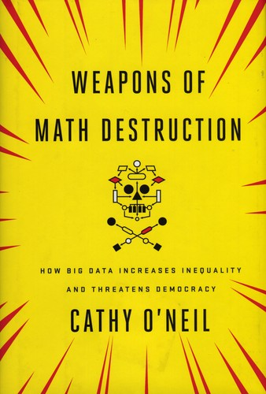
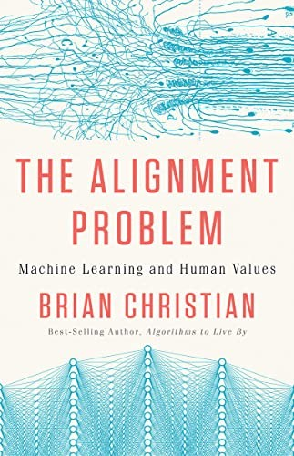

About & Research Interests
I’m a final-year B.Tech student at the University of Mumbai and currently a research intern at A*STAR Singapore. I’ve always been interested in what AI systems can do, but my research has increasingly focused on a different question: how can we understand and trust what these models are actually doing?
Why AI Safety Matters to Me: AI systems are becoming increasingly capable, while many of their internal mechanisms remain difficult to understand. This is particularly concerning when models are used in high-stakes settings such as healthcare. A model achieving high accuracy does not necessarily mean that it is using the information we expect it to use; it may instead rely on shortcuts, correlations, or other unintended signals.
I’m interested in the gap between what a model predicts and why it makes that prediction, and in whether we can develop practical methods for finding these discrepancies.
My Approach: My research sits at the intersection of Technical AI Safety and Mechanistic Interpretability. Rather than looking only at a model’s final outputs, I use controlled interventions and activation-level analysis to investigate what information is influencing its behavior.
My work uses methods including matched counterfactual probes, causal interventions, activation analysis, and Sparse Autoencoders (SAEs). I’m particularly interested in developing practical audits that can reveal when a model appears to rely on information or patterns that we did not intend it to use.
What I’m Working On: Right now, I’m investigating multimodal foundation models, particularly vision-language models. In my recent work, I used medical AI as a testbed to investigate whether models that perform well are actually using clinical text in a meaningful way.
I found cases where changing the accompanying clinical information did not change the model’s prediction as much as expected, suggesting that some predictions may be influenced by learned priors or superficial signals rather than the provided clinical evidence.
By investigating these behaviors at the activation level, I hope to develop auditing methods that can help us better understand and evaluate increasingly capable multimodal models.
Publications
Reading Between the Lesions: Auditing Whether Multimodal Dermatology Classifiers Actually Use Clinical Text

A mechanistic audit asking a safety-critical question: when a multimodal classifier scores well, is clinical text actually driving the decision—or are priors, token scaffolding, and shortcuts? I designed matched counterfactual probes, ablations, and Top-K sparse autoencoders on fused representations to investigate this.
This work bridges mainstream clinical AI and alignment by presenting at a venue specifically targeting the intersection of medical clinicians and AI safety researchers.
- Semantic grounding fails: Aligned clinical text decreased the correct-class margin (−0.0102 mean shift).
- Text presence ≠ text meaning: Ablation probes expose reliance on lexical scaffolding over semantics.
- Foundation-model collapse: LLaVA-Med shows 0% prediction flips under explicitly contradictory histories.
Causal Auditing of Latent Affect in Language Models via Activation Steering
Mechanistic interpretability and inference-time steering without retraining. This project involves applying mechanistic interpretability to isolate internal failure modes and causal drivers within the model's hidden layers, and developing a steering mechanism to enforce model safety constraints.
View PreprintBeyond Accuracy: An Interpretability-Driven Audit of Deep Learning Models for Pneumonia Detection from Chest X-Rays

The European Congress of Radiology (ECR) is one of the largest international meetings in radiology. I presented my sole-authored research, “Beyond Accuracy: An Interpretability-Driven Audit of Deep Learning Models for Pneumonia Detection from Chest X-Rays,” at ECR 2026 Vienna, Austria.
The project investigated whether high-performing medical imaging models were relying on spurious visual shortcuts rather than clinically relevant features. I used interpretability methods and controlled interventions to identify and test shortcut behavior, including experiments involving non-pathological image markers. The work showed how standard performance metrics could hide important failure modes and how targeted auditing and data curation could help address them.
This project was an early step in my broader interest in AI safety and mechanistic auditing: understanding not just whether a model performs well, but what information is actually driving its predictions.
View ECR 2026 PosterManifold-Constrained Counterfactual Explanations for Medical Diagnostics
Biologically constrained counterfactuals for diagnostic verification.
Certifications
BlueDot Impact: The Future of AI

Through BlueDot Impact’s Future of AI course, I explored the rapid trajectory toward AGI and the catastrophic risks of deploying superhuman models without rigorous safety guardrails. This crystallized the urgency of my research in mechanistic interpretability. I am incredibly excited to deepen this expertise in BlueDot's upcoming Technical AI Safety course.
View CertificateBooks I'm Reading
A few foundational books in AI Safety, Alignment, and Mechanistic Interpretability that have significantly shaped my research direction.

